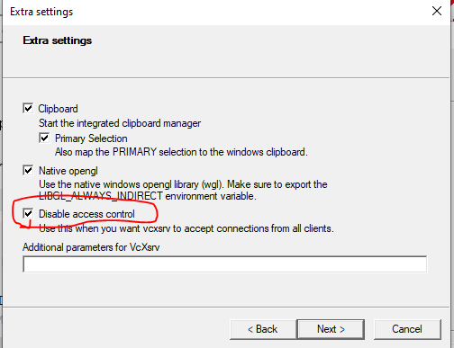

Install WSL - Windows Subsystem for Linux¶
Page last updated on: 2020-12-04
MCCE runs on a Unix system, which is supported by Linux and Mac OSX. If you use Windows 10, the Linux subsystem is a lightweight Linux alternative to run mcce.
Step 1. Enable the Windows Subsystem¶
Open the PowerShell as an Administrator and Run:
dism.exe /online /enable-feature /featurename:Microsoft-Windows-Subsystem-Linux /all /norestart
Step 2. Enable Virtual Machine¶
In the PowerShell run:
dism.exe /online /enable-feature /featurename:VirtualMachinePlatform /all /norestart
Step 3. Download the Linux kernel update package¶
- Download the latest package from one of the following links depending on your CPU architecture:
- Run the update package downloaded in the previous step. (Double-click to run - you will be prompted for elevated permissions, select ‘yes’ to approve this installation.)
Step 4. Set WSL 2 as your default version¶
In the PowerShell run:
wsl --set-default-version 2
Step 5. Install Linux¶
- Open the Microsoft Store and select your favorite Linux distribution.

- From the distribution's page, select "Get".

- Launch the Ubuntu app, and it will prompt to set up the first user account.

After installation, you can start Linux shell window by any of these methods:
- launching Ubuntu App
- using cmd terminal and run "wsl" or "bash"
- using Powershell and run "wsl" or "bash"
- using the Windows Terminal (see next section)
Step 6. Install miniconda3¶
In Linux (wsl) window, run
wget https://repo.anaconda.com/miniconda/Miniconda3-latest-Linux-x86_64.sh
Run:
bash Miniconda3-latest-Linux-x86_64.sh
Step 7. Access Linux subsystem files¶
From Linux subsystem, Windows drives are mounted under /mnt:
C:\ 511747028 455342680 56404348 89% /mnt/c
D:\ 1953512444 774229312 1179283132 40% /mnt/d
F:\ 5860487164 2442458764 3418028400 42% /mnt/f
From Windows, one can point file explore to \\wsl$\Ubuntu to see Linux file system.
Step 8. Install Windows Terminal (Optional)¶
Install Windows terminal from Microsoft Store

Open different terminal types:
- CTRL+Shift+1: Open a powershell
- CTRL+Shift+2: Open a cmd window
- CTRL+Shift+3: Open a Linux terminal
Open a pane:
- alt+shift+plus: Open a vertical pane
- alt+shift+minus: Open a horizontal pane
- alt+shift+D: Open a new pane alternatively between vertical and horizontal modes.
To close a pane:
- type exit
Step 9. Install Xserver for Graphic User Interface (Optional)¶
WSL requires a separate X server to run graphical applications. So one needs to install a X server for Windows and configure WSL to use the X server/
Install VcXsrv¶
Download and install VcXsrv from here: https://sourceforge.net/projects/vcxsrv/
Launch VcXsrv¶
Run xlaunch.exe under c:/Program Files/VcXsrv and make sure "Disable access control" is checked in the dialogue window. 
Configure WSL bash environment to use X server¶
Bash terminal in WSL should be configured to know where the Xserver is in order to run graphics. Since we installed the Xserver in windows, we need to find the Windows virtual host IP address to set the DISPLAY variable:
export DISPLAY=$(cat /etc/resolv.conf | grep nameserver | awk '{print $2}'):0
You can write this command to ~/.bashrc so that DISPLAY is automatically set every time a wsl bash window is open.
Run
xeyes
apt-get install x11-apps